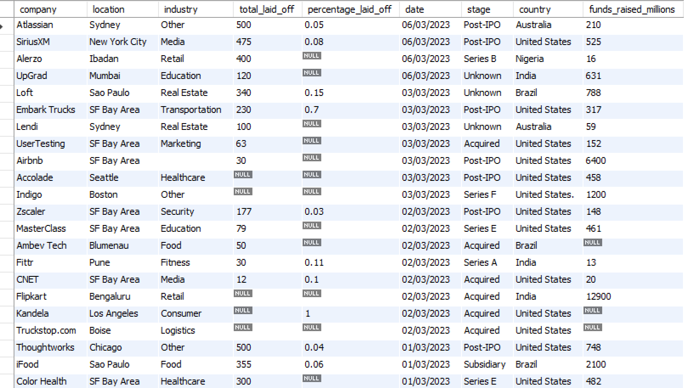
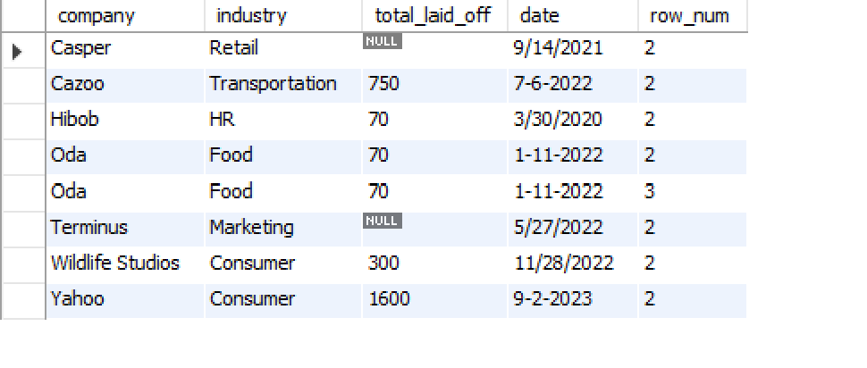
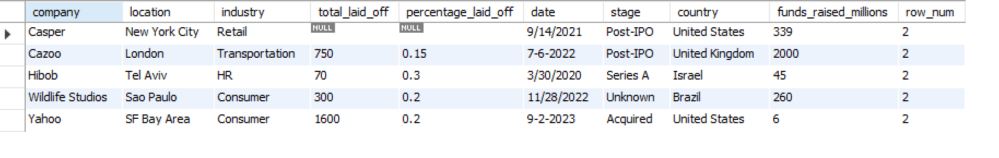
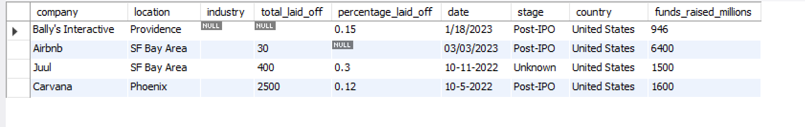
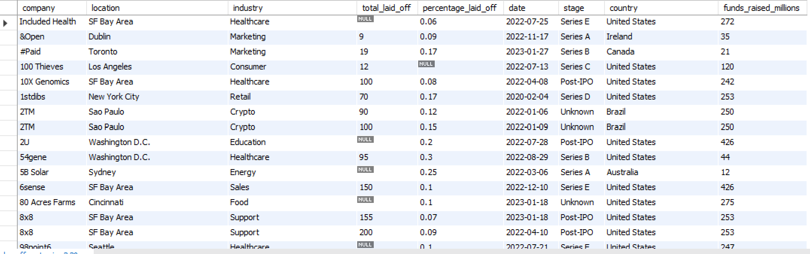

World Layoffs Data Cleaning Using SQL
Transforming raw layoff data into a clean, analysis-ready dataset using SQL and MySQL Workbench.

Project Summary
- Dataset: World Layoffs Dataset (Kaggle)
- Tool: MySQL Workbench
- Skills: SQL, Data Cleaning, Data Validation
- Objective: Prepare raw data for analysis and reporting
Project Goals
- Remove duplicate records
- Standardize values
- Handle null values
- Format dates correctly
- Prepare data for analysis
Tools Used
- MySQL
- SQL
- MySQL Workbench
Data Cleaning Workflow
Step 1: Import Dataset
Imported the CSV dataset into MySQL Workbench and validated the table structure before beginning the cleaning process.

Step 2: Create Staging Table
Created a staging table to preserve the raw dataset and perform all cleaning operations safely.
CREATE TABLE layoffs_staging
LIKE layoffs;
Step 3: Remove Duplicates
Used the ROW_NUMBER() window function to identify duplicate records and remove them.
ROW_NUMBER() OVER(
PARTITION BY company,
industry
)

Step 4: Standardize Data
Corrected inconsistencies in company names, industries, and country values.

Step 5: Handle Missing Values
Filled missing industry values where possible and removed records that could not be used.

Step 6: Final Validation
Verified the dataset quality and ensured it was ready for exploratory data analysis and visualization.

Key SQL Concepts Used
Window Functions
Used ROW_NUMBER() to identify duplicate records.
CTEs
Improved readability and maintenance of SQL queries.
Data Validation
Verified data accuracy after every transformation.
Project Outcome
Successfully transformed a raw layoffs dataset into a clean, structured, and analysis-ready dataset for reporting, visualization, and business intelligence applications.